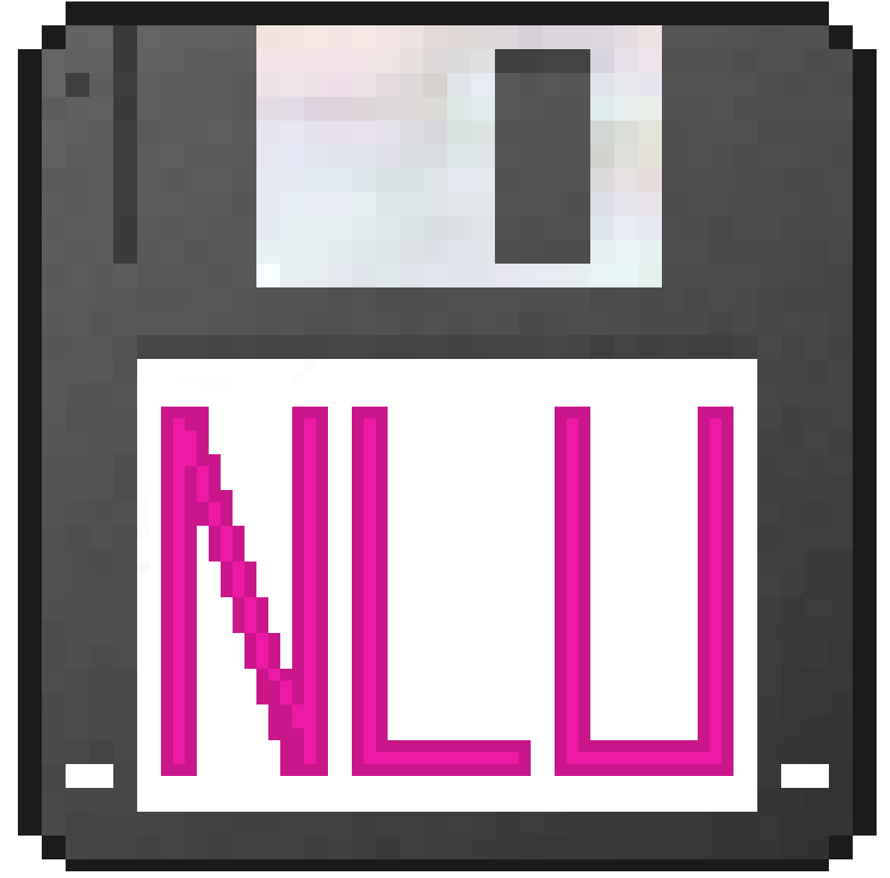
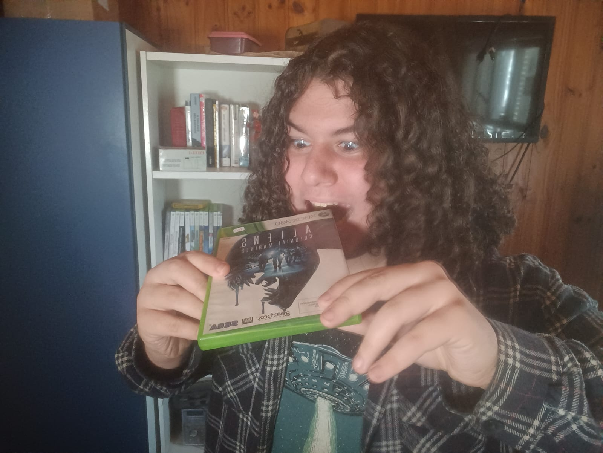
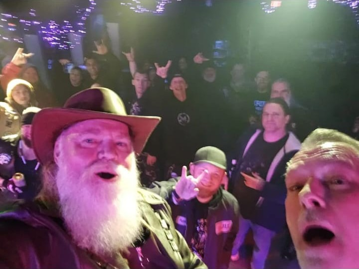
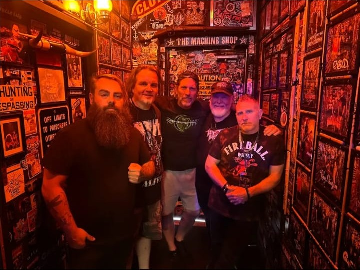
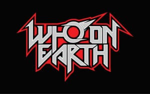

NERD LEAGUE UNITED
Quem Somos
A Nerd League United foi criada em 02 de Novembro de 2025, mas apenas iniciou suas atividades em 01 de Fevereiro de 2026, data essa considerada seu nascimento.
Como canal no YouTube, a NLU é lar das séries e peliculas feitas por um grupo de indivíduos mentalmente debilitados.
A Liga possui o objetivo de apresentar a cultura das mídias como: Games, Filmes, Livros e outros entretenimentos, através de odisséias cômicas e malucas, tudo com o fim de tentar reviver culturas e experiências do passado.
Nerds de todos os tipos, cores, tamanhos, formas e problemas mentais foram convocados a fazer parte desse hospício Grupo, ou melhor, Liga. Se você deseja fazer parte da Nerd League United Productions, vá na aba "Ajuda".

Atuação: Fundador, Ator e Diretor Geral.
Sobre: Criador e mente criativa por trás da NLU Productions.
"Meu filho pode ser retardado, autista e demente, mas burro ele não é." — Mãe do Samuel, 2016.

Atuação: Ator, Dublador e Designer Gráfico.
Sobre: Atuação digna de Um Pistoleiro Chamado Papaco.
"Todo mundo, menos os que estão vivos, estão mortos." — Théo filosofando em Brawlhalla.

Atuação: Ator... só isso mesmo.
Sobre: Atua onde for chamado, prefere manter anonimato (daí o placeholder). Foge da polícia e joga xadrez (THUG LIFE).
"fArMaNdO mUiTa AuRa." — Gabriel.

Atuação: Ator, Dublador, Apresentador e Diretor de DynaBlocks.
Sobre: Apresentador dinâmico, focado em games modernos e mobile.
"Amo jogos competitivos e tênis de mesa, não levo as coisas a sério... só quando necessário."

Atuação: Ator, Dublador, Co-Semi-Diretor.
Sobre: É o leitor assíduo e crítico literário da NLU, o maior nerdola que enche o saco de todo mundo.
"As virtudes que todos deveríamos ter são: empatia, integridade e ética." — Kaillan, logo após xingar um idoso no açougue.

Atuação: Ator, Dublador, Artista, Game Designer.
Sobre: Desenvolvedor dos games da casa e fã obsessivo de palhaços.
"Amo palhaços, palhaços são os melhores amigos de um Cadu." — Cadu, após o misterioso sumiço de 73 palhaços.

Atuação: Ator, Dublador.
Sobre: Coxinha, um "grande" homem. Coleciona cartas de Pokémon, joga (tanto esportes quanto games) e busca ser simpático.
"Se o inimigo consegue prever seus movimentos, não se mova." — Rafael (AKA Coxa), literalmente falando, sentado ao meu lado no Lab. do IF.

Atuação: Atriz.
Sobre: aaaaaaaaaaaaaaaaaaa

Atuação: Atriz.
Sobre:

Atuação: Ator.
Sobre:

Atuação: Ator, Dublador.
Sobre: Fã assíduo da Avril Lavigne, gosta de dinossauros(possivelmente é autista) e se chateia facilmente(Lucas 0.0)
"Independete do que fazemos, das piadas, dos choros, das boas e más notícias, das pessoas que conhecemos no caminho, dos inimigos, das decisões que tomamos, se somos reis ou plebeus, ricos ou pobres, feios ou belos, de esquerda ou de direita, oque somos, oque fomos e oque seremos não vai mudar, o nosso único destino comi o cu de quem tá lendo...." — Emanuel

Atuação: Ator, Dublador.
Sobre: É bem legal.
"Não sei" — Ramirez

Atuação: Atriz.
Sobre:

Atuação: Atriz.
Sobre:

Atuação: Atriz.
Sobre: Enxadrista e leitora, conhece e busca conhecer mais dos mistérios do universo e está pronta para dominar o mundo.
"A NASA e o Google não podem saber disso!." — Vítoria, falando de seu plano malignino de dominação Illuminati.

Atuação: Quadrinhista, artista, ator.
Sobre: Fez alguns dos desenhos do Homem-Galinha e desenhou a HQ( cheque em HQs / Livros), é bom parceiro e é criativo.
"Quando a vida te derrubar, cuidado! Se for gordo estremece a galáxia." — Lucas sobre ser o terceiro gordo da NLU.

Atuação: Atriz, Dubladora.
Sobre:
Através da jornada da NLU várias pessoas e grupos apoiaram nossos projetos, desde ammigos, parentes, até bandas.
Aqui estão Participações Especiais, Apoios, Ajudas e Menções Honrosas.
○Thomas Lothhammer Bohn: Bosta intalada: O Jogo (cheque em Games)
○ Banda Who On Earth - Cover de Hold The Line de toto
Usada em Macross (FC) | N.A.D.A. - EP. 6 |


